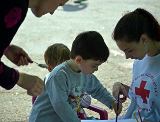

|
|
Главная | Контакты | О нас | Волонтеры |
Стать волонтером
|
Приглашаем вас в наши дружные ряды!
|
Форум поможет ответить на все ваши вопросы, вы всегда будете в курсе всех событий из жизни
организации.
|

Как стать волонтером?Прежде всего, необходимо узнать кто такой «волонтер». Это тот кто действует по свободной воле. Сам захотел, и сам выбрал что делать. Ресурс волонтера — его личное время, его личные силы, умения и навыки |

Выбор организацииЕсть формальные признаки: уставные документы, сайт, команда, описание что и где делают, карта и календарь событий (ложится ли он на Ваш рабочий график), внутренние правила, наличие обучения и поддержки, командная работа |

Волонтер помогает только трудом!Помните! Волонтерство — это вазимный договор. Вазимное решение и признание прав и обязанностей |

Готовься сам задавать вопросы!Что Вам важно знать? Что вы не нашли на сайте? Что вас смутило? Не забудьте спросить кто и с какими полномочиями над Вами старший? Узнайте что делать в случае возникших проблем |
НовостиВся информация о социальном волонтерстве в России |
Помогаем детям вместеДата публикации: 15.11.2020 Мы работаем, чтобы менять будущее для детей, а значит, и для всех нас. Волонтеры проекта "Зеленый город" так же поддерживают детей в больницах и детских домах, становятся их старшими друзьями и наставниками! Присоединяйтесь! |  |
|
|
Стать волонтером может любой, профессия и взгляды на мир не имеют значения |
Социальные сети: Вконтакте Инстаграмм Одноклассники |
© Разработка сайта. Иванов Иван, 2020 |